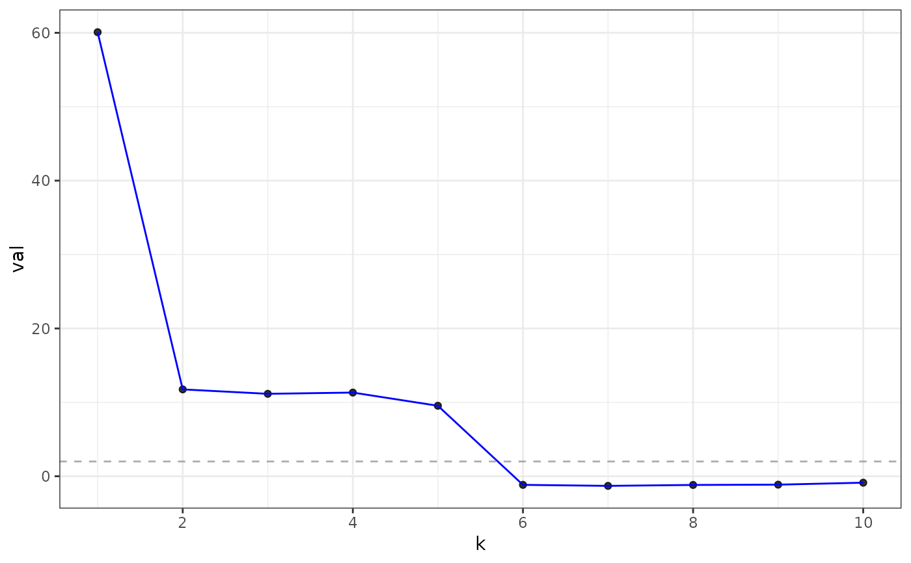
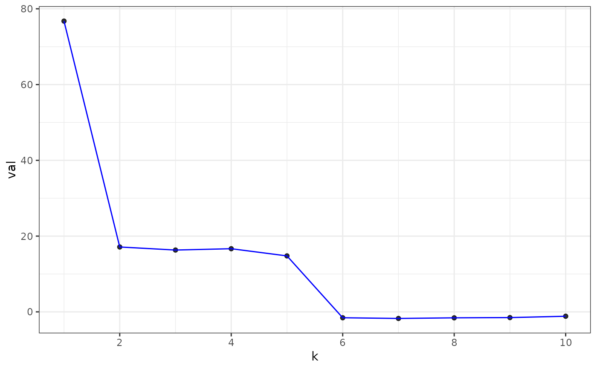
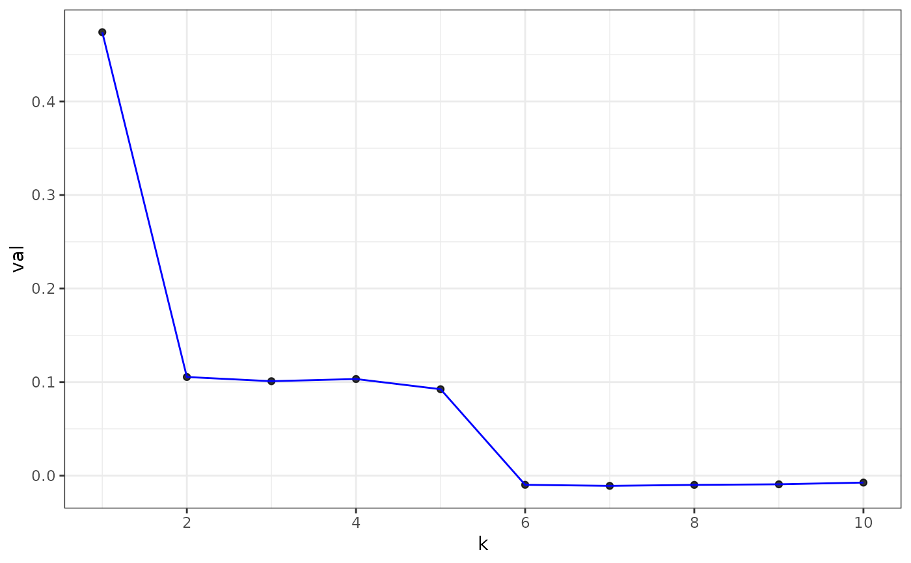

Estimate graph dimension via eigenvalue cross-validation (EigCV).
A graph has dimension k if the first k eigenvectors of its adjacency
matrix are correlated with its population eigenspace, and the others are not.
Edge bootstrapping sub-samples the edges of the graph (without replacement).
Edge splitting separates the edges into a training part and a testing part.
Usage
eigcv(
A,
k_max,
...,
num_bootstraps = 10,
test_portion = 0.1,
alpha = 0.05,
method = c("none", "holm", "hochberg", "hommel", "bonferroni", "BH", "BY", "fdr"),
laplacian = FALSE,
regularize = TRUE
)Arguments
- A
The adjacency matrix of graph. Must be non-negative and integer valued.
- k_max
The maximum dimension of the graph to consider. This many eigenvectors are computed. Should be a non-negative integer smallish relative the dimensions of
A.- ...
Ignored.
- num_bootstraps
The number of times to bootstrap the graph. Since cross-validated eigenvalues are based on a random graph split, they are themselves random. By repeatedly computing cross-validated eigenvalues for different sample splits, the idea is to smooth away some of the randomness due to the graph splits. A small number of bootstraps (3 to 10) usually suffices. Defaults to
10. Test statistics (i.e. z-scores for cv eigenvalues) are averaged across bootstraps and the p-values will be calculated based on the averaged statistics.- test_portion
The portion of the graph to put into the test graph, as opposed to the training graph. Defaults to
0.1. Must be strictly between zero and one.- alpha
Significance level for hypothesis tests. Each dimension
1, ..., k_maxis tested when estimating graph dimension, and the overall graph dimension is taken to be the smallest number of dimensions such that all the tests reject.- method
Method to adjust p-values for multiple testing. Must be one of
"none","holm","hochberg","hommel","bonferroni","BH","BY", or"fdr". Passed tostats::p.adjust(). Defaults to"none".- laplacian
Logical value indicating where to compute cross-validated eigenvalues for the degree-normalize graph Laplacian rather than the graph adjacency matrix. Experimental and should be used with caution. Defaults to
FALSE.- regularize
Only applicable when
laplacian == TRUE, in which case this parameter controls whether or not the degree-normalized graph Laplacian is regularized. Defaults toTRUE.
Value
A eigcv object, which is a list with the following named
elements.
estimated_dimension: inferred graph dimension.summary: summary table of the tests.num_bootstraps: number of bootstraps performed.test_portion: graph splitting probability used.alpha: significance level of each test.
Examples
library(fastRG)
set.seed(27)
B <- matrix(0.1, 5, 5)
diag(B) <- 0.3
model <- sbm(
n = 1000,
k = 5,
B = B,
expected_degree = 40,
poisson_edges = FALSE,
allow_self_loops = FALSE
)
A <- sample_sparse(model)
eigs<- eigcv(A, k_max = 10)
#> 'as(<dsCMatrix>, "dgCMatrix")' is deprecated.
#> Use 'as(., "generalMatrix")' instead.
#> See help("Deprecated") and help("Matrix-deprecated").
eigs
#> Estimated graph dimension: 5
#>
#> Number of bootstraps: 10
#> Edge splitting probabaility: 0.1
#> Significance level: 0.05
#>
#> ------------ Summary of Tests ------------
#> k z pvals padj
#> 1 60.0858888 0.000000e+00 0.000000e+00
#> 2 11.7538714 3.372802e-32 3.372802e-32
#> 3 11.1552401 3.375515e-29 3.375515e-29
#> 4 11.3242906 4.974047e-30 4.974047e-30
#> 5 9.5379830 7.281856e-22 7.281856e-22
#> 6 -1.1633387 8.776540e-01 8.776540e-01
#> 7 -1.2996582 9.031409e-01 9.031409e-01
#> 8 -1.1750915 8.800209e-01 8.800209e-01
#> 9 -1.1354378 8.719040e-01 8.719040e-01
#> 10 -0.8694766 8.077067e-01 8.077067e-01
#>
plot(eigs, type = "z-score") # default

plot(eigs, type = "adjacency")

plot(eigs, type = "laplacian")
